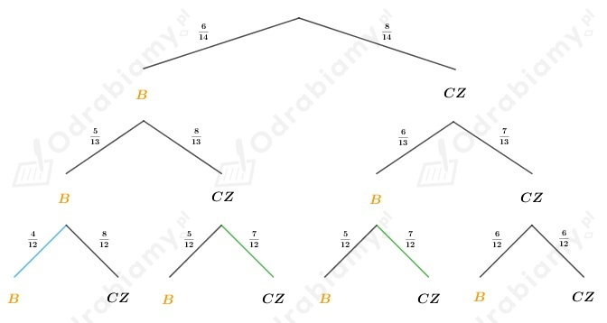

Z treści zadania wiemy że w urnie jest 6 kul białych i 8 czarnych.
Wszystkich kul w urnie jest 6+8=14.
Losujemy kolejno trzy kule bez zwracania.
Narysujmy pomocniczo drzewko:

a)
A - za trzecim razem wylosujemy kulę białą
B - pierwsze dwie wylosowane kule były białe
Z drzewka odczytujemy, że:
(gałąź niebieska)
b)
A - za trzecim razem wylosujemy kulę czarną
B - pierwsze dwie wylosowane kule były różnego koloru
Z drzewka odczytujemy, że:
(gałęzie zielone)
Z treści zadania wiemy, że 1 kulę białą i 6 czarnych wrzucamy losowo do dwóch ponumerowanych szuflad.
Łącznie wszystkich kul jest 7.
A - biała kula znajdzie się w pierwszej szufladzie
B - do drugiej szuflady wrzucaliśmy pięć kul
Niech Ω - zbiór wszystkich możliwych zdarzeń elementarnych, więc:
Wkładamy siedem kul do 2 szuflad.
Jeśli do drugiej szuflady wrzucimy 5 kul, to możemy to zrobić na 21 sposobów, bo:
(z siedmiu ul wybieramy pięć, które wrzucamy do drugiej szuflady, a pozostałe kule
wkładamy na 1 sposób do pierwszej szuflady)
Obliczamy prawdopodobieństwo zdarzenia B:
Jeśli do drugiej szuflady wrzuciliśmy 5 kul i biała kula znajduje się w pierwszej szufladzie, to
takich rozmieszczeń mamy łącznie 6, bo:
(z sześciu kul (z wszystkich poza białą) wybieramy 5, które wkładamy do drugiej szuflady, a pozostałe
wkładamy na 1 sposób do pierwszej szuflady)
Obliczamy prawdopodobieństwo zdarzenia A ∩ B:
Obliczamy prawdopodobieństwo warunkowe:
Z treści zadania wiemy że losujemy bez zwracania trzy liczby ze zbioru {1, 2, 3, 4,..., 20}.
A - suma wylosowanych liczb jest nieparzysta
B - iloczyn wylosowanych liczb jest parzysty
Niech Ω - zbiór wszystkich możliwych zdarzeń elementarnych, więc:
Aby suma trzech liczb była liczbą nieparzystą, to wszystkie trzy muszą być nieparzyste lub dwie parzyste i jedna nieparzysta.
W podanym zbiorze mamy 10 liczb parzystych i 10 liczb nieparzystych.
Zatem możemy wylosować trzy liczby nieparzyste na 10∙9∙8 sposobów lub dwie liczby parzyste i jedną nieparzystą na 10∙9∙10∙3 sposoby (iloczyn 10∙9∙10 mnożymy przez 3 ponieważ uwzględniamy kolejność losowania)
Zatem:
Obliczamy prawdopodobieństwo zdarzenia A:
Aby iloczyn trzech liczb była liczbą parzystą, to przynajmniej jedna z nich musi być
liczbą parzystą.
W podanym zbiorze mamy 10 liczb parzystych i 10 liczb nieparzystych.
Obliczamy, ile jest takich trójek, których iloczyn jest liczbą parzystą (od wszystkich możliwych
wyników odejmuje te, kiedy dostajemy trzy liczby nieparzyste):
Obliczamy prawdopodobieństwo zdarzenia B:
Aby suma wylosowanych liczb była liczbą nieparzysta i iloczyn tych liczb był liczbą parzystą, to
dwie liczby muszą być parzyste, a jedna nieparzysta.
W podanym zbiorze mamy 10 liczb parzystych i 10 liczb nieparzystych.
Obliczamy, ile jest takich trójek, których iloczyn jest liczbą parzystą, a suma liczbą nieparzystą:
Obliczamy prawdopodobieństwo zdarzenia A ∩ B:
Obliczamy prawdopodobieństwa warunkowe:
Zauważmy, że:
Widzimy, że:
Z treści zadania wiemy, że A, B ⊂ Ω.
a)
Należy obliczyć prawdopodobieństwo zdarzenia B.
Wiemy, że:
więc:
Wiemy również, że:
zatem obliczamy prawdopodobieństwo zdarzenia B:
b)
Należy obliczyć prawdopodobieństwo zdarzenia A.
Wiemy, że P(B')=1-P(B), zatem:
Z tego, że:
dostajemy:
więc:
Z tego, że:
dostajemy:
skoro A ∩ B'=A\B, to:
Z treści zadania wiemy, że A, B ⊂ Ω.
a)
Należy obliczyć prawdopodobieństwo sumy zdarzeń A i B.
Wiemy, że:
zatem:
Z tego, że:
dostajemy:
Obliczamy prawdopodobieństwo sumy zdarzeń A i B:
b)
Należy obliczyć prawdopodobieństwo sumy zdarzeń A i B.
Wiemy, że:
zatem:
Z tego, że:
otrzymujemy:
więc:
Z tego, że:
dostajemy:
zatem:
Obliczamy prawdopodobieństwo sumy zdarzeń A i B:
c)
Należy obliczyć prawdopodobieństwo iloczynu zdarzeń A i B:
Z tego, że:
dostajemy:
Wiemy, że:
więc obliczamy prawdopodobieństwo iloczynu zdarzeń A i B:
d)
Należy obliczyć prawdopodobieństwo różnicy zdarzenia A i B:
Z tego, że:
dostajemy:
Obliczamy prawdopodobieństwo różnicy zdarzeń:
Założenia:
Teza:
Dowód:
Wiemy, że:
Rozpisujemy prawą stronę nierówności:
Zatem należy pokazać, że:
czyli
powyższa nierówność jest prawdziwa, zatem wnioskujemy, że:
co kończy dowód.
Z treści zadania wiemy, że pewnej klasie każdy z uczniów umie pływać lub jeździć na nartach.
Uczniowi umiejący pływać stanowią 80% wszystkich uczniów, a jeżdżący na nartach - 50%.
A - uczeń umie jeździć na nartach
B - uczeń umie pływać
Zatem:
a)
Wiemy, że suma obu zdarzeń jest zdarzeniem pewnym, więc:
b)
c)
d)